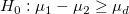
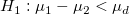
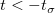

この関数は、2つの対応のある標本の平均の差が に等しいかどうかを検定するのに使われます。(例：平均が等しいかどうかを検定するには、それらの差が0、
/math-590eba6400c9e4df07e0c234f91e4460.png "\mu_1-\mu_2=\mu_d=0\,\!") であるかどうかを検定するだけです。)そして、仮説は次の形式をとります。
であるかどうかを検定するだけです。)そして、仮説は次の形式をとります。
内容 |
この関数は、2つの対応のある標本の平均の差が に等しいかどうかを検定するのに使われます。(例：平均が等しいかどうかを検定するには、それらの差が0、 であるかどうかを検定するだけです。)そして、仮説は次の形式をとります。
/math-f67a81ef315f0c59070ef53cb50b3932.png "H_0:\mu_1-\mu_2=\mu_d\,\!") vs
vs /math-5c09300d675833793616502094acaa0f.png "H_1:\mu_1-\mu_2 \ne \mu_d") 両側
両側
/math-1fc800dcea3acfe50f9e90c310b1174a.png "H_0:\mu_1-\mu_2 \le \mu_d") vs
vs /math-0fbc9ae55928f128a94afcf65c2c2e39.png "H_1:\mu_1-\mu_2 > \mu_d") 上側
上側
 対  下側
正規分布した母集団からとられたと見なされる2つの標本 /math-d60f5062564e1ece65993038b62484fa.png "x_1\,\!") と
と /math-9defdb27049cde0b5bdfd4e762a02d6b.png "x_2\,\!") が同じサイズであると考えると、次のように差を定義することができます。
が同じサイズであると考えると、次のように差を定義することができます。
/math-fa4b74855447f3d57010bcf1090d05b2.png "d_j=x_{1j}-x_{2j},for(j=1,2,...,n)\,\!")
そして、それぞれの差の平均は次式で求められます。
次に、自由度 v = n−1を持つ対応のあるデータポイント間の差 /math-8d0320a6bce227662ff1de19b22c6e25.png "s_d\,\!") の標準偏差sdを計算できます。
の標準偏差sdを計算できます。
/math-06d940fc729cf5c8ba1315ebb8ca1ab7.png "s_d=\sqrt{\frac{1}{n-1}\sum_{i=1}^n(d_i-\bar{d})}")
そして検定する統計量を次式で計算します。
限界値を持つ t の値を比較し、次の場合、帰無仮説/math-806277203dedea2ed8321f6cbd465a54.png "H_0\,\!") を棄却します。
を棄却します。
両側検定： /math-dc78eff8d710d926c9d712cebdb408d0.png "|t| > t_{\sigma/2}\,\!") ;
;
上側検定： ;
下側検定：;
p 値もユーザ指定の有意水準, /math-3ac6004d77c0cc0055e95c99b9dfd7e0.png "\sigma\,\!") と比較され、その値は通常0.05が使われます。の場合、帰無仮説 が棄却されます。
と比較され、その値は通常0.05が使われます。の場合、帰無仮説 が棄却されます。
対応のある標本の平均の差 /math-32a17f0051e09406b2f689fa5f0bb2c5.png "(\mu_1 - \mu_2)\,\!") の信頼区間は、次のようになります。
の信頼区間は、次のようになります。
| 帰無仮説 | 信頼区間 |
|---|---|
|
|
![\left[\bar{d} - t_{\alpha/2}\frac{s_d}{\sqrt{n}}, \bar{d} + t_{\alpha/2}\frac{s_d}{\sqrt{n}}\right]](../images/Algorithm_(PairSampletTest)/math-8d10700cb7317b9442a5fcc4d14e79cd.png "\left[\bar{d} - t_{\alpha/2}\frac{s_d}{\sqrt{n}}, \bar{d} + t_{\alpha/2}\frac{s_d}{\sqrt{n}}\right]")
|
|
|
![\left[\bar{d} - t_{\alpha}\frac{s_d}{\sqrt{n}}, \infty\right]](../images/Algorithm_(PairSampletTest)/math-7b92fed8a3f4aabcf278451dad26b32b.png "\left[\bar{d} - t_{\alpha}\frac{s_d}{\sqrt{n}}, \infty\right]")
|
![\left[-\infty, \bar{d} + t_{\alpha}\frac{s_d}{\sqrt{n}}\right]](../images/Algorithm_(PairSampletTest)/math-5439571d23c3fe70adf8527285fdc5f8.png "\left[-\infty, \bar{d} + t_{\alpha}\frac{s_d}{\sqrt{n}}\right]")
|
2標本の t検定の検出力は、その感度の測定です。検出力の計算に関する詳細なアルゴリズムについては、検出力とサンプルサイズのヘルプをご覧下さい。